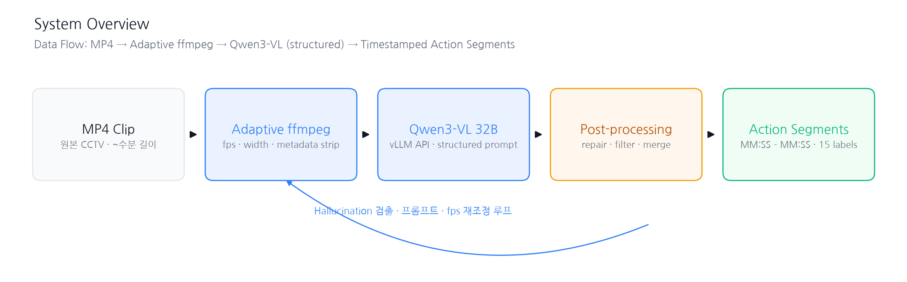
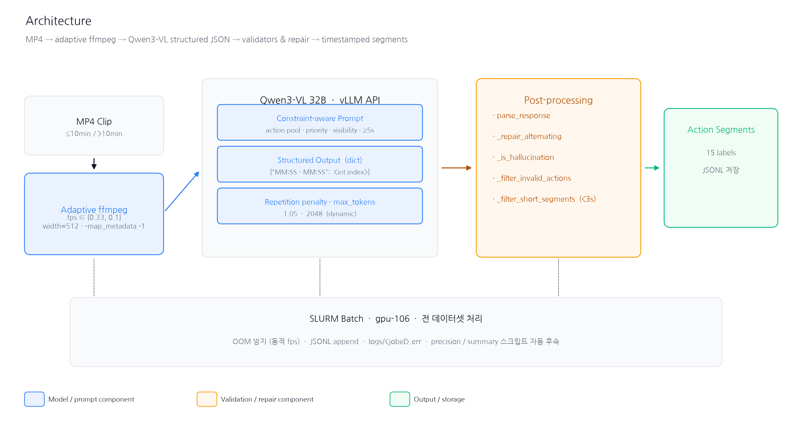
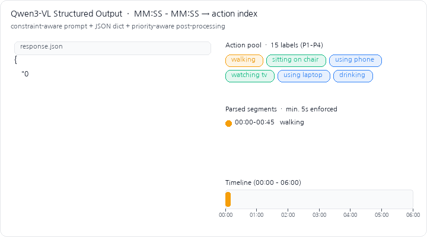
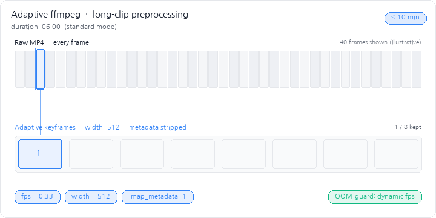
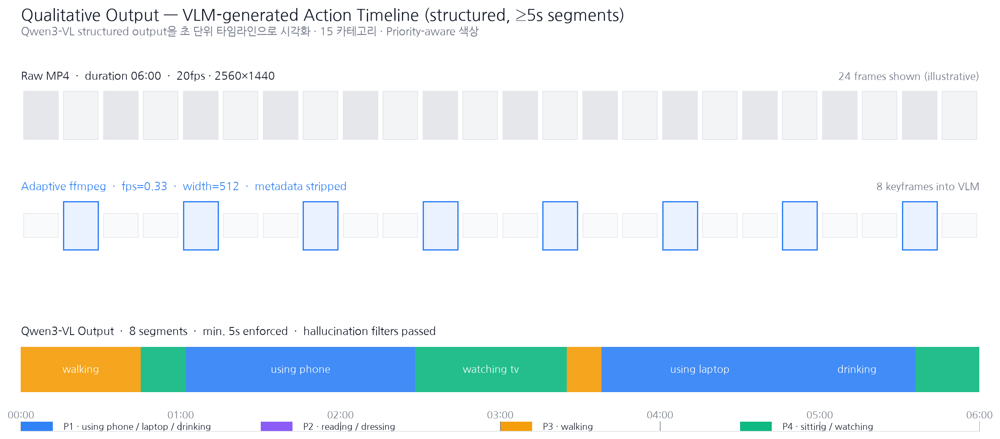
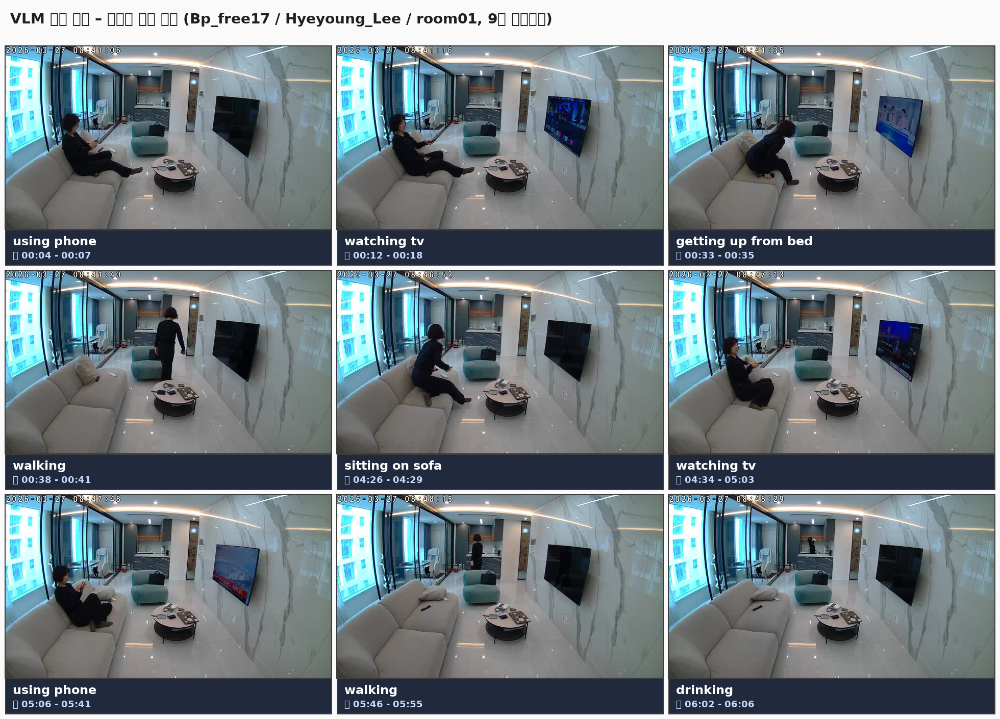

원본 MP4를 FFmpeg로 샘플링한 뒤 Qwen3-VL에 입력하고, 행동별 시작·종료 시점을 구조화된 액션 세그먼트로 저장하는 전체 흐름입니다.
01 · Problem Definition
15개 행동 카테고리에 대해 시작·종료 시점을 초 단위로 표시한 액션 세그먼트가 필요했습니다. 그러나 전용 행동 인식 모델을 새로 학습할 데이터와 시간이 충분하지 않아, 사전학습된 비전-언어 모델(VLM)을 활용하는 접근을 검토했습니다.
원본 영상은 길이가 길어 모든 프레임을 그대로 입력하면 GPU 메모리 부족(OOM)이 발생했습니다. 따라서 모델 선택뿐 아니라 영상 길이와 프레임 수를 조절해 전체 데이터셋을 안정적으로 처리하는 전처리 과정도 필요했습니다.
02 · Scope & Design Goals
별도의 행동 인식 모델을 학습하지 않고도 Qwen3-VL을 이용해 영상의 행동 구간과 타임스탬프를 추출하고, 출력 형식을 검증해 일관된 JSON 결과로 저장하는 파이프라인을 구축하는 것을 목표로 삼았습니다. 또한 FFmpeg 전처리와 SLURM 배치 실행을 연결해 긴 영상이 포함된 전체 데이터셋을 처리할 수 있도록 했습니다.
03 · Design & Implementation
별도 행동 인식 모델 학습 대신 사전학습 VLM 활용
15개 행동 카테고리의 시작·종료 시점을 추출해야 했지만, 전용 행동 인식 모델을 학습할 데이터와 시간이 충분하지 않았습니다. 이에 Qwen3-VL을 사용하고, 자유 서술형 답변 대신 행동 정의·우선순위·화면 내 가시성 조건을 명시한 프롬프트와 JSON 출력 형식으로 문제를 제한했습니다.

시스템 상세 구조입니다. 전처리된 프레임을 Qwen3-VL이 JSON으로 변환하면 validator가 시간 구간과 스키마를 검사하고, 오류가 있는 출력은 수정 경로로 전달합니다. 전체 작업은 SLURM 배치로 실행합니다.
행동 정의와 시간 조건을 포함한 구조화 출력
Qwen3-VL이 임의의 문장으로 행동을 설명하지 않고 정해진 15개 카테고리와 시간 구간을 반환하도록 프롬프트를 구성했습니다. 행동별 정의와 우선순위, 화면에서 확인할 수 있어야 하는 가시성 조건을 명시하고, 최소 지속 시간은 5초 이상으로 제한했습니다. 출력은 행동 카테고리와 시작·종료 시각(MM:SS)을 포함하는 JSON 구조로 받도록 해 후속 검증과 데이터 저장 과정에서 일관되게 처리할 수 있도록 했습니다. 이 단계에서 모델의 자연어 판단을 허용된 행동 목록과 시간 제약으로 제한했습니다.

Qwen3-VL이 15개 허용 카테고리 중 행동 라벨을 선택하고 시작·종료 시각을 JSON으로 반환하는 예시입니다. 구조화 출력은 결과를 타임라인으로 변환하고 후속 검증·저장 단계에 전달하기 위한 형식이며, 그 자체가 행동 인식 정확도를 의미하지는 않습니다.
영상 길이에 따른 적응형 프레임 샘플링
긴 영상을 그대로 모델에 전달하면 프레임 수가 많아져 메모리 부족이 발생할 수 있었습니다. 이를 줄이기 위해 FFmpeg로 영상 길이에 따라 프레임 샘플링 간격을 조정하고, 입력 너비를 512픽셀로 제한했습니다. 실행 예시에서는 짧은 영상 구간에 0.33 fps, 더 긴 구간에 0.1 fps 샘플링을 적용했으며, 메타데이터를 제거하고 OOM guard를 두어 입력량을 통제했습니다. 샘플링 간격을 넓히면 입력 프레임 수와 메모리 사용량은 줄지만, 짧은 행동이나 빠른 전환 시점을 놓칠 수 있습니다.

FFmpeg 전처리 예시입니다. 영상 길이에 따라 0.33 fps 또는 0.1 fps로 프레임을 추출하고 너비를 512픽셀로 제한하며, 메타데이터 제거와 OOM guard로 VLM 입력량을 제어합니다.
04 · Experiments & Results
Qwen3-VL의 행동 구간 추론, JSON 구조화 출력, FFmpeg 전처리와 검증·수정 단계를 연결해 원본 MP4에서 타임스탬프가 포함된 액션 세그먼트를 생성하는 파이프라인을 구성했습니다. SLURM 배치 실행을 연결해 다수의 영상을 순차 처리할 수 있는 작업 흐름을 마련했습니다. 시각화 예시에서는 행동 라벨과 시작·종료 시각이 타임라인 및 샘플 프레임에 연결되는 것을 확인했습니다. 정답 구간 라벨과 대조한 인식 성능은 별도로 측정하지 않았습니다.

원본 영상과 모델이 생성한 행동 타임라인을 비교한 예시입니다. 하나의 클립을 여러 행동 구간으로 나누고, 각 구간의 시작·종료 시점과 행동 카테고리를 시간축에 표시했습니다.

Bp_free17 / Hyeyoung_Lee / room01 세션에서 추출한 9개 샘플 프레임입니다. Qwen3-VL이 예측한 각 행동의 시작·종료 시각(MM:SS)과 액션 라벨을 프레임에 표시해, 시간 구간 분류 결과를 원본 장면과 대조할 수 있도록 했습니다.
05 · Technical Issues & Improvements
긴 영상을 한 번에 입력했을 때 GPU 메모리 부족이 발생해, FFmpeg에서 영상 길이에 따라 프레임 수를 조절하고 입력 너비를 512픽셀로 제한했습니다. 이 설정으로 배치 처리는 가능해졌지만, 낮은 샘플링 빈도에서는 짧은 행동이나 행동 전환 시점을 놓칠 수 있습니다. 프롬프트에 행동 정의와 최소 지속 시간 조건을 넣어도, 화면에서 구분하기 어려운 행동의 라벨이나 시작·종료 시점이 잘못 추정되는 문제는 남아 있습니다.
현재 확인한 것은 JSON 형식 검증과 타임라인 생성, 샘플 프레임 대조까지입니다. 정답 행동 구간과 비교한 정확도는 아직 확인하지 않았습니다. 다음 단계에서는 정답 타임라인이 있는 검증 데이터를 마련하고, 샘플링 간격과 입력 해상도별로 짧은 행동의 누락 및 시간 경계 오차를 비교할 예정입니다. 이후에는 JSON 유효성 검사와 별도로 행동 분류 및 구간 추정 오류를 유형별로 기록해 프롬프트와 전처리 설정을 수정하려고 합니다.